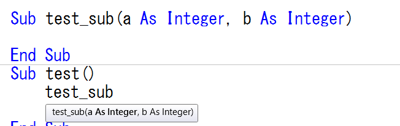

VBAでの括弧()の使い方、括弧が必要な場合
オブジェクトのメソッドや、プロシージャー（Sub、Function）を呼ぶときに、引数を括弧()で囲うのか、囲わないのか・・・
初心者が赤い文法エラーが出て悩むことの一つです。
VBAでは、どんな時に括弧を付けて、どんな時に括弧を付けないのか・・・
・括弧が不要な場合
基本文型
Call オブジェクト.メソッド(引数1, 引数2, …)
変数 = オブジェクト.メソッド(引数1, 引数2, …) ・・・ 戻り値がオブジェクトならSetが必要
Call Subプロシージャー(引数1, 引数2, …)
Call Functionプロシージャー(引数1, 引数2, …)
変数 = Functionプロシージャー(引数1, 引数2, …) ・・・ 戻り値がオブジェクトならSetが必要
変数 = 関数(引数1, 引数2, …)
なんとなく括弧が必要な場合が理解できるでしょうか。
Call オブジェクト.メソッド 引数1, 引数2, …
変数 = オブジェクト.メソッド 引数1, 引数2, …
Call Subプロシージャー 引数1, 引数2, …
Call Functionプロシージャー 引数1, 引数2, …
変数 = Functionプロシージャー 引数1, 引数2, …
VBAにおける括弧()
最もわかりやすいのは、計算式での括弧()でしょうか。
要は括弧の中は一塊であるという事です。
(1 + 2)これで一塊、その塊に*3しているという事です。
(引数リスト)の一塊として、直前のメソッド等の付属情報になります。
問題は半角空白との関係で、
括弧()を書かなければならない場合、
書かなくて良い（むしろ書いてはいけない）場合があるという事です。
VBAにおける半角空白の意味
ただし、
カンマの後ろは、区切ではなく、見やすく整形して入っているだけとして見て下さい。
Set 変数 =
Let 変数 = ・・・ Letは通常省略して書いているもの
これらは代入文の受側としての式になります。
そこで、
カンマで繋がっているものは一塊、代入式も一塊として見るようにすると、
※以下、半角空白は□で表記します。
Call□メソッド(引数)
代入式□メソッド(引数)
プロシージャー□引数
Call□プロシージャー(引数)
代入式□メソッド(引数)
・・・
書き方が変わるのは、戻り値を使うか使わないかという違いだけです。
そこで、わかりやすいように、この後は「メソッド」だけで説明します。
さらに説明を進めます。
括弧はその前の単語に対する追加情報になります。
VBAでの追加情報である括弧()は、その前の単語にくっつけて（間に空白を入れずに）記述します。
つまり、空白で区切られておらず一塊になっています。
したがって、単語（追加情報）、これで一塊だという事です。
そこで、
上記の、「メソッド(引数)」を「メソッド引数」のように書き換えてみると、
Call□メソッド引数
代入式□メソッド引数
これらは、
主体□客体
命令□オペランド
こうしてみると、半角空白（□） は1つしか出てきません。
2つ出てくることはありません。
Call□メソッド□引数
この指定は、ありえない指定ということで、赤字エラーになります。
もともと、
メソッド
これだけ書けば、Callが省略されている訳ですから問題ありません。
そこで、引数を追加する時に、
メソッド(引数)
メソッド□引数
どちらになるのかと言う事になります。
これは赤字エラーになります。
ただし前者の書き方をすると、
メソッド□(引数)
このように、引数の括弧の前に半角空白が自動的に付きます。
つまり、そこには、半角空白の区切が必要だと言う事です。
それは、引数を渡すのではなく、引数の値を評価してその値を渡す事になります。
この場合、たとえByRefの引数であっても、
渡す前に先に値を評価して、その評価した値を渡す事になるので、ByValとして動作することになってしまいます。
ByVal、ByRefについては、値渡し、参照渡しについて（ByVal,ByRef）
このようにして見ていくと、むしろ、
メソッド□引数1,引数2,・・・
この記述こそが特別なもののように見えてきます。

このように、VB.NETでは常に括弧()が付いて記述が統一されています。
つまり、VBAの
メソッド□引数1, 引数2, …
むしろこの記述こそが不自然なものであるという事にほかなりません。
VBAの、
メソッド□引数1, 引数2, …
これが特別な書き方だということです。
変数 = Functionプロシージャー 引数1, 引数2, 引数3
これは、普通に見てもおかしい感じをうけますね。
これでは、
変数 = Functionプロシージャー
これに対して引数を指定しているようにも見えてしまいます。
少なくとも、=の右辺に区切としての半角空白が入る事はありません。
（当然、演算子の前後の半角空白は除いてという事です）
戻り値を他の用途に使う時
メソッド1(引数1, 引数2, …).メソッド2
このような記述が出てくることがあります。
これは、
Set 変数 = メソッド1(引数1, 引数2, …)
変数.メソッド2
これと同じことで、2つをくっつけて書いていることになります。
さすがに、この場合に括弧()を半角空白で書いてしまう事はないでしょう。
メソッド1(引数1, メソッド1(引数1, 引数2, …), …)
このような使い方をする場合もありますが、この場合は括弧()が必ず必要になります。
この場合は、さすがに括弧を省略しようと思う人はいないでしょう。
当然、関数の引数内でも同じことになります。
If メソッド1(引数1, 引数2, …) = 値 Then
この場合も括弧()が必ず必要になりますが、
やはり括弧を省略しようと思う人はいないとは思います。
これは、
If (メソッド1(引数1, 引数2, …)) = 値 Then
このように記述することと同じになります。
括弧()の使い方の基本文型
Call メソッド(引数1, 引数2, …)
変数 = メソッド(引数1, 引数2, …)
(メソッド(引数1, 引数2, …))
メソッド 引数1, 引数2, …
これが特別なのです。
しかし、VBAではこの使い方が非常に多い事からわかりづらくなっていると思います。
メソッド 引数1, 引数2, …
これが特別なのです。
Callを省略しなければ全て括弧が必要になる
メソッド 引数1, 引数2, …
これだけが特別なのですが、これはCallが省略された形になります。
つまり、
常にCallを書けば、全て括弧()が必要になり記述は統一されます。
例えば以下のVBA
With Range("B3:C5")
.Clear
.Insert Shift:=xlDown
End With
ごく普通の書き方に感じられるでしょう。（処理内容は意味なしコードです）
本サイトで学んだ人でも、こういう書き方をしているはずです。
しかし、これらのメソッド（ClearやInsert）は、Callが省略されているのです。
With Range("B3:C5")
Call .Clear
Call .Insert(Shift:=xlDown)
End With
Callを省略せずに書けば、このようになります。
そして、この書き方こそが本来の書き方だと言ってよいでしょう。
しかし、多くの書籍およびWEBページでの説明は前者の書き方になっているはずです。
つまり、最初にCall省略で書きなれてしまうため、
その後に括弧()付きの書き方が必要になった時に戸惑ってしまう事になっているのではないでしょうか。
多くのサンプルでCallが省略されていますし、わざわざ書くのは面倒でもあります。
慣れてしまえば、ごく当たり前に両者を書き分けられるようになるものです。
最後に一言
他の言語から見ると、むしろ特殊な感じさえあるかもしれません。
単にそういう決まりなんだと受け入れるしかないと思います。
メソッド□(引数1) ・・・ 括弧を付けると先に値を評価して常に値渡しになる。
その他の場合は、
間違っていれば赤字エラーになるので、エラーになったら直せば済みます。
同じテーマ「マクロVBA技術解説」の記事
実は奥が深いIfステートメント
論理積（And）論理和（Or）と真（True）偽（False）の判定
If条件式のいろいろな書き方：TrueとFalseの判定とは
VBAでの括弧()の使い方、括弧が必要な場合
VBAにおけるピリオドとカンマとスペースの使い方
変数とプロシージャーの命名について
文字列置換の基本と応用（Replace）
データクレンジングと名寄せ
ForとIfのネストこそがVBAの要点
For Next の使い方いろいろ
新着記事NEW ・・・新着記事一覧を見る
VBA100本ノック 100本目：WEBから100本ノックのリストを取得｜VBA練習問題（3月3日）
VBA100本ノック 99本目：自動席替え（行列と前後左右が全て違うように）｜VBA練習問題（3月2日）
VBA100本ノック 98本目：席替えルールが守られているか確認｜VBA練習問題（3月1日）
VBA100本ノック 97本目：Accessデータを取得（グループ集計）｜VBA練習問題（2月27日）
VBA100本ノック 96本目：Accessデータを取得（マスタ結合&抽出）｜VBA練習問題（2月26日）
VBA100本ノック 95本目：図形のテキストを検索するフォーム作成｜VBA練習問題（2月24日）
VBA100本ノック 94本目：表範囲からHTMLのtableタグを作成｜VBA練習問題（2月23日）
VBA100本ノック 93本目：複数ブックを連結して再分割｜VBA練習問題（2月22日）
VBA100本ノック 92本目：セルの色を16進で返す関数｜VBA練習問題（2月20日）
VBA100本ノック 91本目：時間計算（残業時間の月間合計）｜VBA練習問題（2月19日）
アクセスランキング ・・・ ランキング一覧を見る
1.最終行の取得（End,Rows.Count）｜VBA入門
2.RangeとCellsの使い方｜VBA入門
3.変数宣言のDimとデータ型｜VBA入門
4.マクロって何？VBAって何？｜VBA入門
5.Range以外の指定方法（Cells,Rows,Columns）｜VBA入門
6.セルのコピー&値の貼り付け（PasteSpecial）｜VBA入門
7.繰り返し処理（For Next)｜VBA入門
8.セルに文字を入れるとは（Range,Value）｜VBA入門
9.マクロはどこに書くの（VBEの起動）｜VBA入門
10.とにかく書いてみよう（Sub,End Sub）｜VBA入門
- ホーム
- マクロVBA応用編
- マクロVBA技術解説
- VBAでの括弧()の使い方、括弧が必要な場合
このサイトがお役に立ちましたら「シェア」「Bookmark」をお願いいたします。
記述には細心の注意をしたつもりですが、
間違いやご指摘がありましたら、「お問い合わせ」からお知らせいただけると幸いです。
掲載のVBAコードは動作を保証するものではなく、あくまでVBA学習のサンプルとして掲載しています。
掲載のVBAコードは自己責任でご使用ください。万一データ破損等の損害が発生しても責任は負いません。